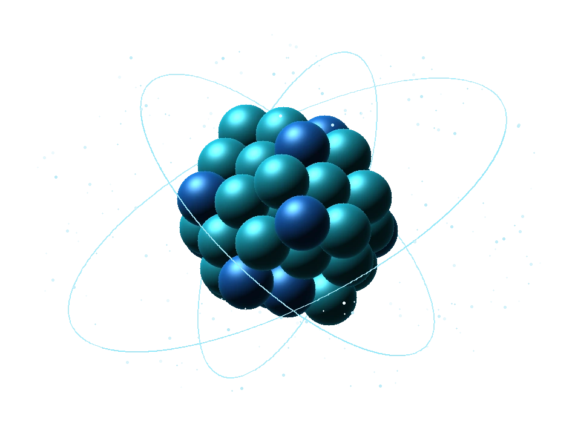
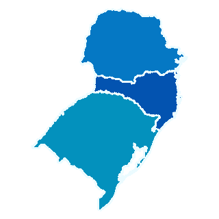
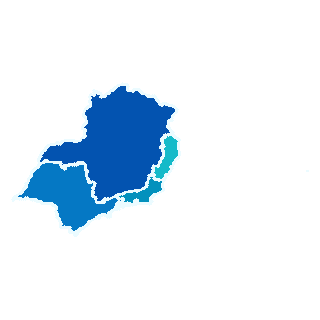

Como se classificam, nessa ordem, as radiações alfa, beta e gama?
Enunciado adaptado da prova de Física Médica para ingresso em 2025. Use 1 para radiação eletromagnética e 2 para corpuscular. Consultar caderno oficial ↗
PREPARATÓRIO PARA RESIDÊNCIA
Estude para a residência com aulas por tema, provas comentadas e resoluções que explicam cada passo do raciocínio.

AMOSTRA GRATUITA
Resolva a questão e confira o raciocínio por trás da resposta. Você pode começar agora, sem cadastro.
Enunciado adaptado da prova de Física Médica para ingresso em 2025. Use 1 para radiação eletromagnética e 2 para corpuscular. Consultar caderno oficial ↗
O PREPARATÓRIO
Para estudantes nos últimos semestres e recém-formados em Física ou Física Médica. Explore o programa previsto para a primeira turma.
Cerca de 20 aulas gravadas, com duração prevista de 25 a 45 minutos, acompanhadas de resumos em PDF. Os temas serão definidos pelo levantamento dos editais e pela recorrência nas provas.
O planejamento contempla duas seleções de referência no Sul e no Sudeste e os cinco ciclos mais recentes disponíveis. As resoluções serão divididas em blocos, com indicação de instituição, ano, fonte e eventuais divergências de gabarito.
Um simulado inicial ajudará cada estudante a identificar os temas que merecem revisão. O roteiro de estudo orientará a retomada desses conteúdos.
ACERVO
Escolha uma região para explorar as instituições ou acesse a prova nacional do ENARE.
Exame Nacional de Residência · Física Médica

PR · SC · RSRegião SulCaderno de prova em catalogação.
Consultar seleçãoCaderno de prova em catalogação.
Consultar seleção
ES · MG · RJ · SPRegião SudesteCaderno de prova em catalogação.
Consultar programaCaderno de prova em catalogação.
Consultar seleçãoCaderno de prova em catalogação.
Consultar residênciaCaderno de prova em catalogação.
Consultar seleçãoQUEM ENSINA
Cofundadora · Aulas e resoluções
Cofundadora · Aulas e resoluções
PRIMEIRA TURMA
Preço e período de acesso serão confirmados antes da venda.
Cadastro de interesse disponível em breve.